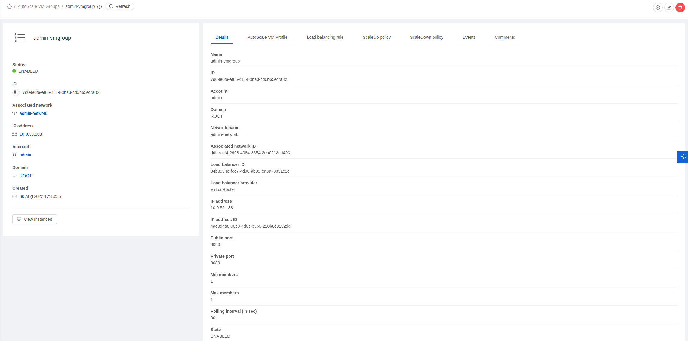
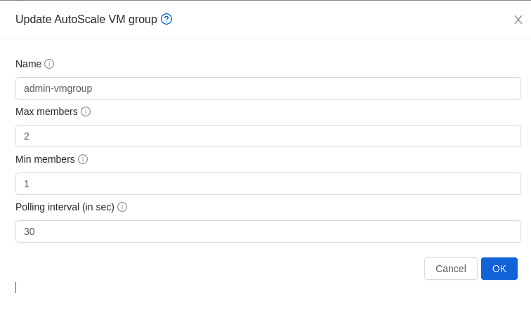
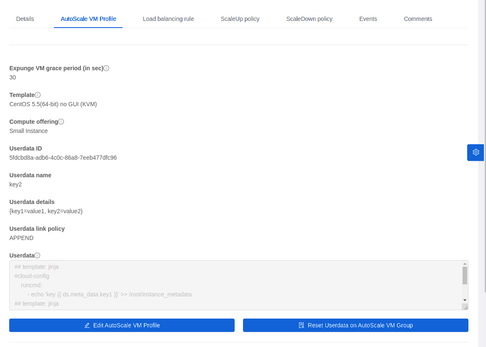
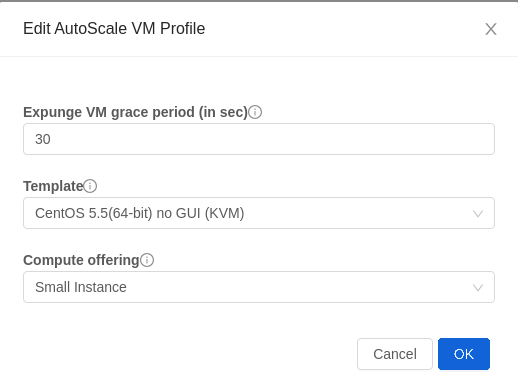
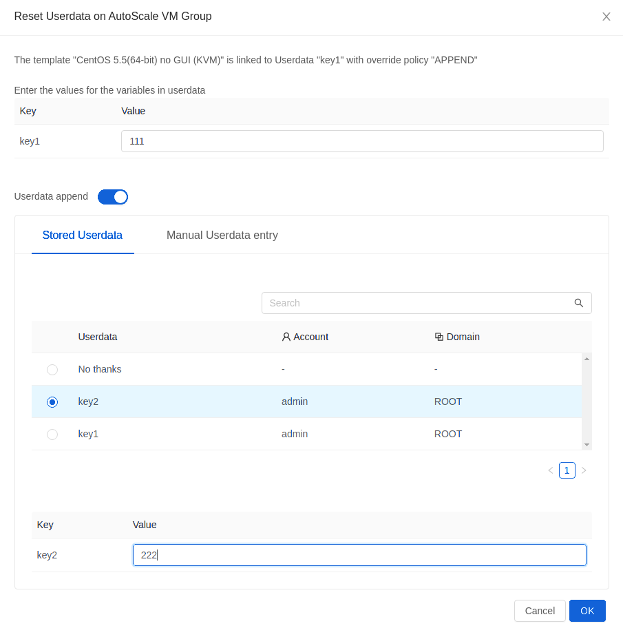
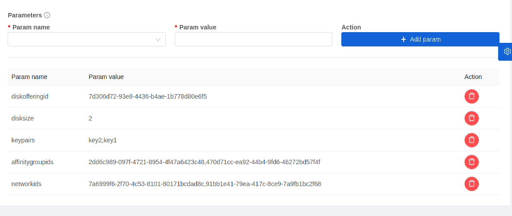
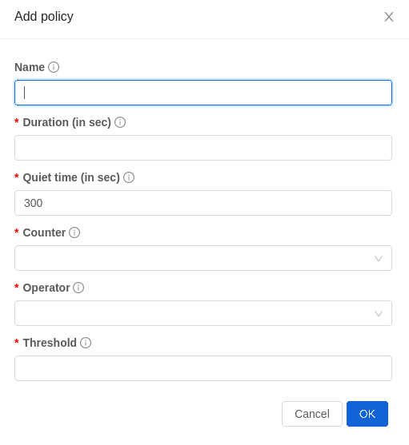
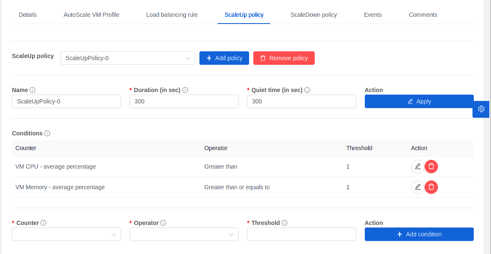
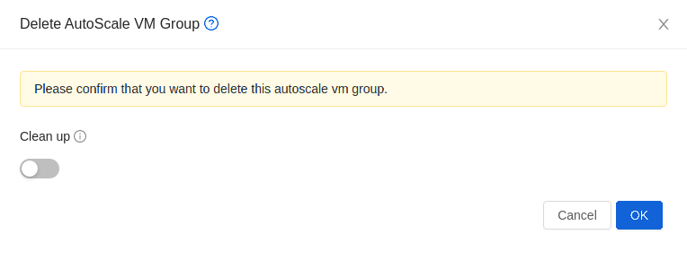

Instance AutoScaling#
What is AutoScaling?#
AutoScaling allows you to scale your back-end services or application Instances up or down seamlessly and automatically according to the conditions you define. With AutoScaling enabled, you can ensure that the number of Instances you are using seamlessly scale up when demand increases, and automatically decreases when demand subsides. Thus it helps you save compute costs by terminating underused Instances automatically and launching new ones when you need them, without the need for manual intervention.
Prerequisites#
Before you configure an AutoScale rule, consider the following:
Ensure that the necessary Template is prepared before configuring AutoScale. Firstly you must install the PV-driver or virtio driver, which helps CloudStack collects performance parameters (CPU and memory) into Instances. Besides, when an Instance is deployed by using a Template and when it comes up, the application should be up and running.
Create an Isolated Network using a Network offering which supports Instance AutoScaling, acquire a new IP address (it will be used as Source NAT of the Network) and create a load balancer rule without any Instance.
Adding an AutoScale Instance Group#
Log in to the Zergaw CloudStack UI as an administrator or end user.
In the left navigation, choose Compute -> AutoScale Instance Groups.
Click the New AutoScale Instance Group button.
Specify the following:
Zone: A zone where the Instances will be deployed to.
Template: A Template consists of a base OS image and application. A Template is used to provision the new Instance of an application on a scaleup action. When an Instance is deployed from a Template, it can start taking the traffic from the load balancer without any admin intervention. For example, if the Instance is deployed for a Web service, it should have the Web server running, the database connected, and so on.
Compute offering: A predefined set of virtual hardware attributes, including CPU speed, number of CPUs, and RAM size, that the user can select when creating a new Instance. Choose one of the compute offerings to be used while provisioning an Instance as part of the scaleup action.
Data disk: An extra disk attached to each Instance in the Instance group.(optional)
Networks: The Networks of the Instances. If there are multiple networks checked, the network of the load balancer rule will be the default Network of the Instances.
Load balancing rule: When an Instance is created, it will be automatically assigned to the load balancing rule. When an Instance is expunged, it will be removed from the load balancing rule.
ScaleUp policies: The policies for ScaleUp action. When all of the conditions in one of the ScaleUp policies are met, CloudStack will create an Instance if the number of Instances do not exceed Max Instance.
ScaleDown policies: The policies for ScaleDown action. When all of the conditions in one of the ScaleDown policies are met, CloudStack will expunge an Instance in the group if the number of Instances is larger than Min Instance.
Name: The name of the Instance group. The name of the new Instances will use the name of the Instance group as prefix.
Min Instance: The minimum number of active Instances that is assigned to a load balancing rule. The active Instances are the application Instances that are up and serving the traffic, and are being load balanced. This parameter ensures that a load balancing rule has at least the configured number of active Instances are available to serve the traffic.
Max Instance: Maximum number of active Instances that should be assigned to a load balancing rule. This parameter defines the upper limit of active Instances that can be assigned to a load balancing rule.
Specifying a large value for the Maximum Instance parameter might result in provisioning large number of Instances, which in turn leads to a single load balancing rule exhausting the Instances limit specified at the account or domain level.
Polling interval: Frequency in which the conditions, combination of counter, operator and threshold, are to be evaluated before taking a scale up or down action. The default polling interval is 30 seconds.
Expunge Instance Grace Period: The duration in seconds, after a scaledown action is initiated, to wait before the Instance is expunged as part of scaledown action. This is to ensure graceful close of any pending sessions or transactions being served by the Instance marked for expunge. The default is 120 seconds.
Create: Click Create to create the AutoScale Instance group.
Additionally, if you want to configure the advanced settings, click Show advanced settings, and specify the following:
SSH key pairs: The SSH Keys of the Instances.
For more information, see “Using SSH Keys for Authentication”.
Affinity groups: The affinity groups of the Instances.
For more information, see “Affinity Groups”.
Userdata: The userdata of the Instances.
For more information, see “User-Data and Meta-Data”.
AutoScale Policies#
An AutoScale Instance Group must have one or more scale-up policies, and one or more scale-down policies.
Each AutoScale Policy has the following parameters:
Duration: The duration, in seconds, for which the conditions you specify must be true to trigger a scale action. The conditions defined should hold true for the entire duration you specify for an AutoScale action to be invoked.
Quiet Time: This is the cool down period after an AutoScale action is initiated. The time includes the time taken to complete provisioning an Instance from its Template and the time taken by an application to be ready to serve traffic. This quiet time allows the fleet to come up to a stable state before any action can take place. The default is 300 seconds.
Action: The scale action. The options are ScaleUp and ScaleDown.
Conditions: A policy must contain at least one condition.
Each condition in AutoScale policies has the following parameters:
Counter: The performance counters expose the state of the monitored Instances. We added five new counters to work with that feature:
Instance CPU - average percentage
Instance Memory - average percentage
Public Network - mbps received per Instance
Public Network - mbps transmit per Instance
Load Balancer - average connections per Instance
Remember to choose one of them. If you choose anything else, the autoscaling will not work.
Operator: The following five relational operators are supported in AutoScale feature: Greater than, Less than, Less than or equal to, Greater than or equal to, and Equal to.
Threshold: Threshold value to be used for the counter. Once the counter defined above breaches the threshold value, the AutoScale feature initiates a scaleup or scaledown action.
Note
The counter “Instance Memory - average percentage” calculates the average memory usage of available Instances (in Starting, Stopping, Running, Migrating states) in the AutoScale Instance Group. On KVM/XenServer, the Instance memory usage is calculated by
Instance memory usage percentage = (total memory - free memory) * 100 / total memory
Note
The counters “Public Network - mbps received per Instance” and “Public Network - mbps transmit per Instance” consider all public traffic through the VR public interface, including the traffic from/to other Instances which are not in the AutoScale Instance group.
Disabling and Enabling an AutoScale Instance Group#
You can view the detail of the AutoScale Instance Group.
Log in to the Zergaw CloudStack UI as an administrator or end user.
In the left navigation, choose Compute -> AutoScale Instance Groups.
Select the AutoScale Instance Group you want to work with.

If you want to perform any maintenance operation on the AutoScale Instances, disable the AutoScale Instance Group. When the AutoScale Instance Group is disabled, no scaleup or scaledown action is performed. You can use this downtime for the maintenance activities. To disable the AutoScale Instance Group, click the Disable AutoScale Instance Group button.
The button toggles between enable and disable, depending on whether AutoScale is currently enabled or not. After the maintenance operations are done, you can enable the AutoScale Instance Group back. To enable the AutoScale Instance Group, click the Enable AutoScale Instance Group button.
Updating an AutoScale Instance Group#
You can update the various parameters of Instance profile, and add or delete the conditions in a scaleup or scaledown policy. Before you update an AutoScale Instance Group, ensure that you disable it first by clicking the Disable AutoScale button.
To update the AutoScale Instance Group, click the Update AutoScale Instance Group button.

Updating AutoScale Instance Profile#
To update the Instance Profile of the AutoScale Instance Group, click the AutoScale Instance Profile tab, You will see the details of AutoScale Instance Profile.

then click Edit AutoScale Instance Profile button.

You are able to reset userdata of the Instance, by clicking Reset Userdata on AutoScale Instance Group button.

You are also able to update the deploy parameters of the Instances.

The following parameters are supported.
affinitygroupids: The UUID of the affinity groups, separated by a single comma character (,).
diskofferingid: The UUID of the data disk.
disksize: The size of data disk. This is valid only if the disk offering is dynamic.
keypairs: The name of the SSH Key pairs, separated by a single comma character (,).
networkids: The UUID of the Instance networks, separated by a single comma character (,).
overridediskofferingid: The UUID of override disk offering for ROOT disk.
rootdisksize: The size of the ROOT disk. This overrides the size of the Instance Template.
securitygroupids: The UUID of security groups, separated by a single comma character (,). This is valid only if the network provider is Netscaler.
Adding an AutoScale policy#
To add a new Scale policy to the AutoScale Instance Group, click the ScaleUp policy or ScaleDown policy tab, then click “Add policy”.

For more information, see “AutoScale policies”.
Updating AutoScale policies#
To update the AutoScale policies of the AutoScale Instance Group, click the ScaleUp policy or ScaleDown policy tab.

To update an existing AutoScale policies, select a policy, input the new value of Duration or Quiet time, then click Edit button.
To add a new condition to the policy, choose Counter and Operator and input the value, click Add condition.
To remove an existing condition from the policy, click Delete button of the condition.
To update a condition in the policy, click Edit button, choose Operator and input the value, click OK button.
Removing an AutoScale policy#
To remove an existing AutoScale policies, select a policy, click “Remove policy” button.
Note
To apply the new AutoScale Instance Profile and AutoScale policies, open the AutoScale Instance Group details, then click the Enable AutoScale Instance Group button.
Deleting an AutoScale Instance Group#
To remove an AutoScale Instance Group, click “Delete AutoScale Instance Group” button.

AutoScale Instance Group can be removed only if there are no Instances in the group.
To force-delete the AutoScale Instance Group, check the cleanup checkbox, then click OK button. All the Instances in the group will be expunged.
Runtime Considerations#
An administrator should not assign an Instance to a load balancing rule which is configured for AutoScale.
Making API calls outside the context of AutoScale, such as destroyVM, on an autoscaled Instance leaves the load balancing configuration in an inconsistent state. Even though the Instance is destroyed from the load balancer rule, it continues to be shown as a service assigned to a rule inside the context of AutoScale.